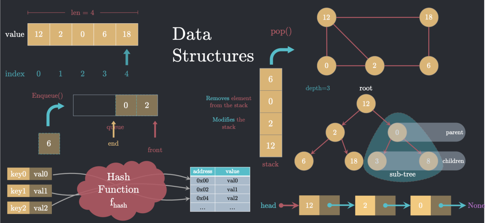

Introdução à Estrutura de Dados
No universo do desenvolvimento de software, a construção de sistemas que sejam não apenas funcionais, mas também eficientes e escaláveis, exige um pilar fundamental: a Estrutura de Dados (EDD). Em essência, quando lidamos com sistemas robustos, surge a necessidade de relacionar, de diferentes formas, partes encapsuladas do código, como as classes em Programação Orientada a Objetos (POO). A Estrutura de Dados surge como a solução para essa necessidade, fornecendo os meios para organizar e manipular dados de maneira inteligente, permitindo o relacionamento entre classes de múltiplas formas e, assim, suprindo as demandas de aplicações cada vez mais complexas.
Os conceitos apresentados a partir daqui dependem de fundamentos de Progamação Orientada a Objetos, recomendamos que confira os nossos artigos sobre no
link.

Princípios Fundamentais da Estrutura de Dados
- Nodes (nós): Os nós são os blocos de construção fundamentais de muitas estruturas de dados. Eles atuam como contêineres que armazenam os dados e, crucialmente, as referências para outros nós. Em uma aplicação de rede social, por exemplo, cada usuário em uma lista de amigos poderia ser representado como um nó.
- Ponteiros: Os ponteiros são a "cola" que une os nós. Se os nós são os elementos de uma lista, os ponteiros são as conexões que estabelecem a relação entre eles. Em uma estrutura de dados, um nó normalmente "aponta" para o próximo, criando uma sequência ou uma hierarquia. Essa capacidade de conectar nós de forma dinâmica é o que confere a muitas estruturas de dados sua flexibilidade
- Classes e Objetos: Como mencionado, a Estrutura de Dados frequentemente se apoia em conceitos de Programação Orientada a Objetos. As classes servem como moldes para a criação de objetos (os nós), e os relacionamentos entre esses objetos formam a estrutura de dados.
Principais tipos de Estruturas de Dados
A seguir, apresentamos uma visão geral dos principais tipos de estruturas de dados
Listas Ligadas (Linked Lists) são estruturas de dados lineares das mais básicas. Diferente de um array, onde os elementos são armazenados em posições de memória próximas umas das outras, em uma lista ligada, os elementos são nós dispersos na memória, conectados por meio de ponteiros. A manipulação desses ponteiros permite a inserção e remoção eficiente de elementos em qualquer ponto da lista.
Filas (Queues) e Pilhas (Stacks) Filas e pilhas são estruturas de dados lineares que restringem a inserção e a remoção de elementos a extremidades específicas.
Filas Operam sob o princípio FIFO (First-In, First-Out), ou "o primeiro que entra é o primeiro que sai". Pense em uma fila de supermercado: o primeiro cliente a chegar é o primeiro a ser atendido. Novas inserções ocorrem no final da fila (enfileirar), e as remoções acontecem no início (desenfileirar).
Pilhas Seguem o princípio LIFO (Last-In, First-Out), ou "o último que entra é o primeiro que sai". Uma analogia comum é uma pilha de pratos: o último prato colocado no topo é o primeiro a ser removido. As operações são chamadas de push (empilhar um novo elemento) e pop (desempilhar o elemento do topo).
Árvores (Trees) são estruturas de dados hierárquicas, não lineares, que consistem em nós conectados por arestas. O nó do topo é chamado de raiz, e cada nó pode ter vários "filhos". As árvores são extremamente úteis para representar relações hierárquicas, como a estrutura de diretórios de um sistema de arquivos ou a árvore genealógica de uma família. Um tipo comum é a árvore binária, na qual cada nó tem no máximo dois filhos.
Grafos (Graphs) são estruturas de dados não lineares que consistem em um conjunto de nós (ou vértices) e um conjunto de arestas que conectam pares de nós. Eles são ideais para modelar redes e relações complexas, como redes sociais (onde os usuários são os nós e as amizades são as arestas), mapas de cidades (cidades como nós e estradas como arestas) e a internet.
Um exemplo em código
O exemplo a seguir mostra uma lista ligada não ordenada criada em python